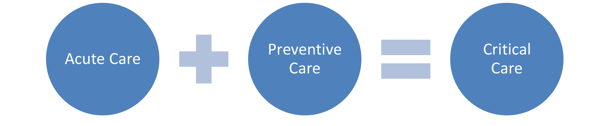
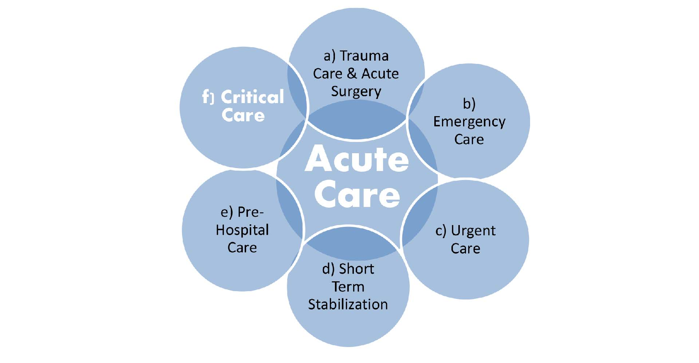
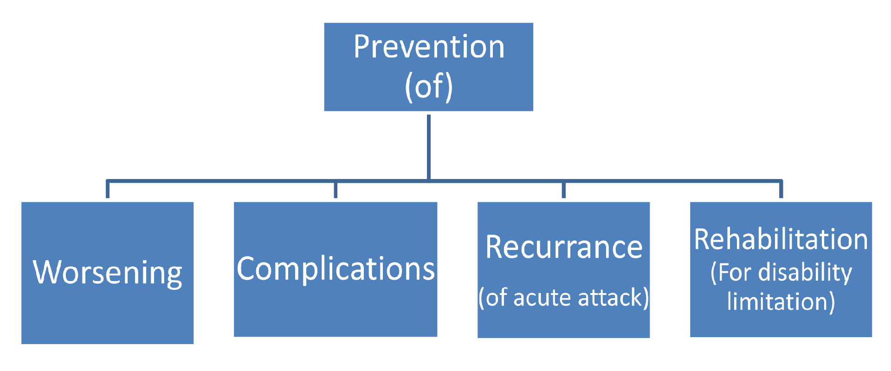
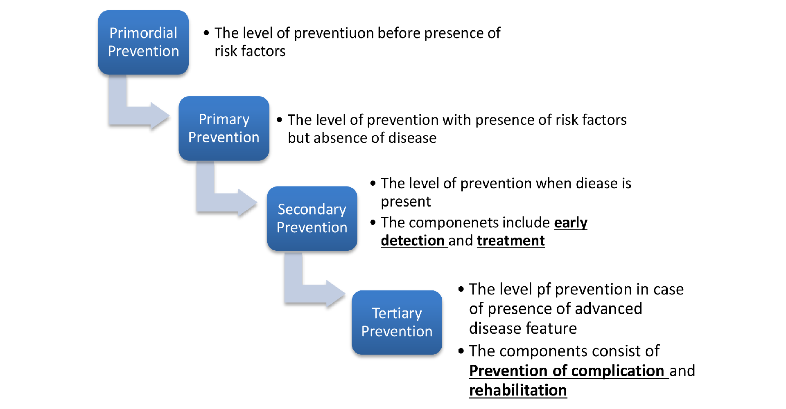

Acute Care + Preventive Care = Critical Care
The existing definition:
When searching for the existing definition of critical care, we see the ambiguity in the expression of the term critical care, alongside the lack of an actual definition but abundance of explanations of the term critical care itself.
• The specialized care of patients whose conditions are life-threatening and who require comprehensive care and constant monitoring, usually in intensive care units. Also known as intensive care.
• The care of seriously ill patients in a special hospital unit
• Intensive care is needed if someone is seriously ill and requires intensive treatment and close monitoring, or if they're having surgery and intensive care can help them recover. Intensive care units (ICUs) are specialist hospital wards that provide treatment and monitoring for people who are very ill. They're staffed with specially trained healthcare professionals and contain sophisticated monitoring equipment. ICUs are also sometimes called critical care units (CCUs) or intensive therapy units (ITUs).
• Continuous monitoring and treatment of seriously ill patients using special medical equipment and services.
However, if we see the above definitions, it is very easy to see that critical care, at present, is being explained or defined on the basis of the location of provision of the health services, rather than on the nature of the illness or condition of the patient, or the kind of treatment provided.
In order to change the present outlook and to provide a definition of Critical Care that reflects the nature of the treatment that it provides, we express the term critical care as:

Acute care as a part of Critical Care:
A WHO study has defined Acute Care as:
a) Treatment of individuals with acute surgical needs, such as life-threatening injuries, acute appendicitis or strangulated hernias.
b) Treatment of individuals with acute life- or limb-threatening medical and potentially surgical needs, such as acute myocardial infarctions or acute cerebrovascular accidents, or evaluation of patients with abdominal pain.
c) Ambulatory care in a facility delivering medical care outside a hospital emergency department, usually on an unscheduled, walk-in basis. Examples include evaluation of an injured ankle or fever in a child.
d) Treatment of individuals with acute needs before delivery of definitive treatment. Examples include administering intravenous fluids to a critically injured patient before transfer to an operating room.
e) Care provided in the community until the patient arrives at a formal health-care facility capable of giving definitive care. Examples include delivery of care by ambulance personnel or evaluation of acute health problems by local health-care providers. The specialized care of patients whose conditions are life-threatening and who require comprehensive care and constant monitoring, usually in intensive care units. Examples are patients with severe respiratory problems requiring endotracheal intubation and patients with seizures caused by cerebral malaria.
 Hence it is easy to see that acute care is very naturally a part of critical care, but the nature of care may vary depending on the basis of the kind of disease/disorder in question and the kind of care provided.
But while Acute Care is a part of Critical Care, it is evident that it is not limited to critical care only.
Preventive care as part of Critical Care:
For this, let us first understand the components of prevention in general:
 It is obvious to see that the patients admitted in a critical care setup (i.e. those that fall in the group receiving critical care) are patients with either early onset or advanced diseases in most of the case, barring a few. Hence the components of preventive care we are taking into consideration here are.
• Secondary prevention i.e. early detection and treatment (to prevent worsening or disease progression and recurrence),
• Tertiary Prevention i.e. prevention of complications and rehabilitation (to limit disability and improve lifestyle)
Hence the preventive component of Critical Care can be describes as:

And thus, we come to the statement we started with:
Acute Care + Preventive Care = Critical Care
CRITICAL CARE, CRITICAL TIME,CRITICAL DECISION HEAL THE WORLD MAKE IT BETTER PLACE
The Advance Heath Care Foundation in association with Bellevue Clinic has been organizing an annual conference on Critical Care Medicine titled ‘Critical Care, Critical Time, Critical Decisions’. These three-day-long seminars include lectures, workshops and panel discussions by eminent doctors from all over the country as well as guest speaker and coordinators from the international medical fraternity. The aim: To bring together doctors and other medical personnel for various specializations under one roof for the purpose of integrated discussion on the subject of Critical Care. Since the first such seminar held on 2016, the organizers have gotten together to make this endeavor an annual one. The following are the highlights of the seminars held so far.

2016 | DATE: JUNE 18-19
LOCATION: GOLDEN PARK, KOLKATA
After registration from 8AM to 9AM, the day’s activity started, initially with a Pleanery session,followed subsequently by workshop on various topics. The evening session included panel discussions and was concluded by the felicitation of the Senior doctors and a Cultural Program, thus ending by 7:30PM.
| # | First | Last | Handle |
|---|---|---|---|
| 1 | Mark | Otto | @mdo |
| 2 | Jacob | Thornton | @fat |
| 3 | Larry | the Bird |